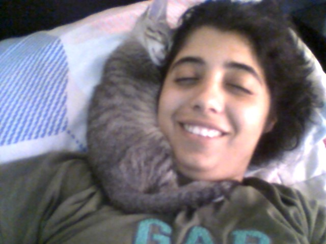

Sobre Mi
Mi nombre es Valentina Enciso y esta es mi pagina web.
Soy la mama de dos gatos:
PACO:
Paco es mi bebe mayor, tiene 3 años y es un chunky boy
Es un gato gris atigrado con ojos verdes claros
Se perdio cuando tenia 7 meses y lo busque por 20 dias antes de encontrarlo, estaba con otra familia muy lejos
Es algo antipatico pero mimoso cuando quiere.
Esta imagen es de Paco cuando era pequeño.
KIKI:
Kiki es mi bebe mas pequeña, tiene apenas 6 meses y es una long girl
Es una gatita marmolada le decimos, pero el termino correcto es carey. Tiene ojos amarillos.
Aun es muy cachorra, pero no se queda corta de travesuras.
Es muy salvaje, tira todo, se sube a todo lugar y muerde todo.
Si desean ver imagenes de Kiki les comparto el link a mi ig: Tina_Enciso